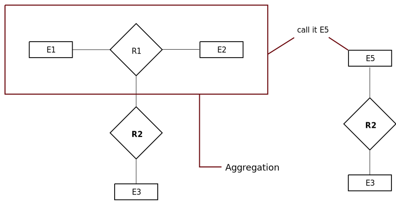

Introduction
Basic terms in DBMS
Data
- Data is a collection of raw, unorganized facts and details like text, obervations, figures, symbols, and descriptions of things etc.
- In other words, data does not carry specific purpose and has no significance by itself.
- Moreover, data is measured in terms of bits and bytes - which are basic units of information in the context of computer storage and processing.
- Data can be recovered and doesn't have any meaning unless processed.
Types of data
- Quantitative
- Numerical form
- Weight, volume, cost of an item
- Qualitative
- Descriptive, but not numerical
- Name, gender, hair color of a person
Information
- Information is processed, organized and structured data.
- It provides context of the data and enables decision making.
- Processed data that make sense to us.
- Information is extracted from the data by analyzing and interpreting pieces of data.
- E.g., you have data of all the people living in your locality, its data, when you analyze and
interpret the data and come to some conclusion that:
- There are 100 senior citizens
- The sex ratio is 1:1
- Newborn babies are 100
Data vs Information
- Data is a collection of facts, while information puts those facts into context.
- While data is raw and unorganized, information is organized.
- Data points are individual and sometimes unrelated. Information maps out that data to provide a big-picture view of how it all fits together.
- Data, on its own, is meaningless. When it’s analyzed and interpreted, it becomes meaningful information.
- Data does not depend on information; however, information depends on data.
- Data typically comes in the form of graphs, numbers, figures, or statistics. Information is typically presented through words, language, thoughts, and ideas.
- Data isn’t sufficient for decision-making, but you can make decisions based on information.
What is Database?
- Database is an electronic place/system where data is stored in a way that it can be easily accessed, managed, and updated.
- To make real use of Data, we need Database management systems. (DBMS)
What is DBMS?
- A database-management system (DBMS) is a collection of interrelated data and a set of programs to access those data. The collection of data, usually referred to as the database, contains information relevant to an enterprise. The primary goal of a DBMS is to provide a way to store and retrieve database information that is both convenient and efficient.
- A DBMS is the database itself, along with all the software and functionality. It is used to perform different operations, like addition, access, updating, and deletion of the data.
- DBMS is used to organize the data in the form of a table, schema, view and report etc.
- The primary goal of a DBMS is to provide a way to store and retrieve database information that is both convenient and efficient.
DBMS is the combination of two words : DATABASE & MANAGEMENT SYSTEM
- A database is a collection of related information stored, so that it is available to many users for different purpose.
- Database management system is a collection of programs that enables users to create and maintain the database.
- DBMS can also be defined as an interface between the Application program and the operating system to access and manipulate that database.
- Database management system is a software which is used to manage the database. For example: MYSQL, Oracle, etc are a very popular commercial database which is used in different applications.
- Users interact with applications through user interfaces.
- Applications use APIs to communicate with the DBMS.
- APIs provide a way for applications to send queries and commands to the DBMS.
- The DBMS processes these queries and commands and interacts with the database to retrieve or update data.
- The database stores the data securely and in an organized manner.
- The DBMS sends the requested data or updates back to the application through the API.
- The application processes the data and presents it to the user through the user interface.
Characteristics and Applications of DBMS
- It uses a digital repository established on a server to store and manage the information.
- It can provide a clear and logical view of the process that manipulates data.
- DBMS contains automatic backup and recovery procedures.
- It contain ACID (Atomicity Consistency Isolation Durability) properties which maintain data in a
healthy state in case of failure.
- Atomicity: This property ensures that a transaction is treated as a single, indivisible unit of work. Either all of its changes are applied to the database, or none of them are. In other words, if a transaction contains multiple steps, and any step fails, the entire transaction is rolled back, and the database remains unchanged. This prevents the database from being left in an inconsistent state due to partial transactions.
- Consistency: Consistency ensures that a transaction brings the database from one valid state to another. In other words, the database should follow certain rules or constraints before and after the transaction. If a transaction violates any of these rules, it is not allowed to be executed. This property maintains the integrity of the data and prevents data corruption.
- Isolation: Isolation ensures that multiple transactions can be executed concurrently without interfering with each other. Each transaction is executed as if it were the only transaction in the system, even if there are other transactions running at the same time. This prevents issues like data being read or modified by one transaction while another transaction is still in progress, which could lead to incorrect results or data corruption.
- Durability: Durability guarantees that once a transaction is successfully completed and its changes are committed to the database, they will persist even in the face of system failures (e.g., power outage, system crash). These changes will be permanent and will not be lost. This property ensures that once data is written to the database, it can be relied upon to be available and consistent.
- It can reduce the complex relationship between data.
- It is used to support maniulation and processing of data.
- It is used to provide security of data.
- It can view the database from different viewpoints according to the requirements of the user.
Applications of DBMS
- Banking → For maintaining customer information, accounts, loans and banking transactions.
- Universities → For maintaining student records, course registration and grades.
- Railway reservation → For checking the availability of reservation in different trains, tickets, etc.
- Airlines → For reservation and schedule information.
- Telecommunication → For keeping records of calls mode, generating monthly bills etc.
- Finance → For storing information about holidys, sales and purchase of financial instruments.
- Sales → For customer, product and purchase information.
Advantages and Disadvantages of DBMS
Advantages
- Data Independence: Data independence is the concept that separates the way data is stored
from the way it is accessed and used. It ensures that changes made to the structure of the
database (schema) do not affect the applications using the data. There are two types of data
independence: logical and physical.
- Logical data independence allows modifications to the logical structure of the database without impacting the applications. For instance, if a new attribute needs to be added to a table or a relationship between tables is altered, applications accessing the data won't need to be rewritten. This flexibility is vital for adapting to changing business requirements without disrupting the existing software.
- Physical data independence allows changes in the physical storage details of the database without affecting how data is accessed. For instance, the DBMS can decide to store data on different storage devices, reorganize data files for efficiency, or even change the file format used for storage. These changes can be made transparently to applications, ensuring that their operations remain unaffected.
- Efficient Data Access: Efficient data access is a cornerstone of a well-designed DBMS,
ensuring that data retrieval and manipulation are performed optimally.
- Indexing: Indexes are data structures that speed up data retrieval by providing a quick way to locate specific rows in a table based on certain columns. For example, a database can use a B-tree index to efficiently find records matching a certain value without scanning the entire table. It uses indexing, query optimization, and caching techniques to speed up data access. This is especially important when dealing with large datasets, as it reduces the time it takes to retrieve information.
- Query Optimization: Query optimization is the process of determining the most efficient way to execute a query. The DBMS's query optimizer analyzes different execution plans and selects the one that minimizes the time and resources needed to fetch the required data.
- Caching: Caching involves storing frequently accessed data in memory. This reduces the need to fetch data from slower storage devices, such as hard drives, every time it's requested. Caching mechanisms enhance performance by providing faster data access for common queries.
- Data Integrity: Data integrity refers to the accuracy, consistency, and reliability of the data stored in the database. A DBMS enforces data integrity constraints, such as uniqueness, referential integrity, and data validation rules. This ensures that the data stored in the database remains reliable and accurate over time.
- Concurrent Access to Data: In a multi-user environment, multiple users or applications might need to access the same data simultaneously. A DBMS manages concurrent access by providing mechanisms like locking and transaction management. This ensures that data remains consistent even when accessed by multiple users concurrently.
- Ensures Data Recovery: A DBMS includes features for data backup and recovery. Regular backups and transaction logs enable recovery in case of hardware failures, system crashes, or human errors. This helps prevent data loss and ensures business continuity.
- Data Security: Data security is crucial to protect sensitive and confidential information. A DBMS provides security mechanisms to control who can access the data and what operations they can perform on it. This includes user authentication, authorization, and encryption of data stored in the database.
- Control database redundancy → It can control data redundancy because it stores all
the data in one single database file and that recorded data is placed in the database.
- Database redundancy refers to the situation where the same data is stored multiple times in a database. Redundancy can lead to various issues, such as increased storage requirements, data inconsistency (due to multiple copies of the same data being updated differently), and difficulties in maintaining data accuracy.
- Data sharing → In DBMS the authorized users of an organization can share the data among multiple users.
- Easily maintenance → It can be easily maintained due to the centralized nature of the database system.
- Reduce time → It reduces development time and maintenance need.
- Backup → It provides backup and recovery subsystems which create automatic backup of data from hardware and software failure and restores the data if required.
- Multiple user interface → It provides different types of user interface like graphical user interfaces, application program interfaces.
Disadvantages of DBMS
- Cost of hardware and software → It requires a high speed of data processor and large memory size to run DBMS software.
- Size → It occupies a large space of disks and large memory to run them efficiently.
- Complexity → Database system creates additional complexity and requirements.
- Higher impact of failure → Failure highly impacts the database because in most of the organization all the data stored in a single database and if the database is damaged due to electric failure or database corruption then the data may be lost forever.
Database system vs File system
- Database system : A Database System is a structured and organized software application that manages and stores collections of data. It includes a Database Management System (DBMS) along with the actual databases it manages. The DBMS handles tasks such as data storage, retrieval, modification, and maintenance, while providing data integrity, security, and efficient data manipulation. Database systems are designed to handle large amounts of structured data and offer features like data modeling, query languages, transaction management, and more.
- File system : A File System is the software component of an operating system that manages the storage and organization of files on storage devices. It defines the structure for storing files, directories, and metadata related to each file, such as size, permissions, and location. File systems provide a way for users and applications to access and manage files stored on various storage media. They're generally simpler than database systems and are primarily focused on managing individual files rather than structured data relationships.

Disadvantages of file system
- Data redundancy and inconsistency : In file systems, the same data may be stored in multiple files, leading to redundancy. This redundancy can result in inconsistencies when updates are made to the same data in different files, causing discrepancies and errors.
- Difficulty in Accessing Data : Retrieving specific data from file systems can be challenging. Users need to know the exact location and structure of files, leading to complex code and slower data access times.
- Data isolation : In file systems, data is scattered across various files and formats, making it hard to maintain consistency and integrity. Changes to data structures can lead to issues in multiple places.
- Integrity problems : Maintaining data integrity (accuracy and consistency) is difficult in file systems since there is no centralized control over data. Unauthorized changes and errors can occur easily.
- Atomicity problems : File systems lack mechanisms to ensure atomicity, which is the property that guarantees a series of operations are treated as a single, indivisible unit. If an operation fails midway, there's no way to ensure the database is left in a consistent state.
- Concurrent access anomalies : In file systems, concurrent access to data by multiple users can lead to inconsistent outcomes. Race conditions and conflicts can arise, causing incorrect or unexpected results.
- Security problems : File systems have limited security features. Unauthorized access to files and data can occur, leading to potential data breaches and privacy violations.
The above mentioned disadvantages of file system are advantages of Database system
Advantages of Database system
- Data Redundancy and Inconsistency Resolution: DBMS minimizes redundancy through normalization, which eliminates data duplication. Centralized control ensures consistent updates, reducing inconsistencies.
- Efficient Data Access: DBMS provides query optimization and indexing techniques, making data retrieval more efficient. Users can use a common query language to access data, simplifying the process.
- Data Integration: DBMS integrates data in a centralized repository, enabling data isolation and easier management. Changes to data structures can be made systematically.
- Data Integrity Enforcement: DBMS enforces data integrity through constraints, triggers, and validation rules. It ensures that data remains accurate and consistent.
- Atomicity and Transaction Management: DBMS ensures atomicity by using transactions. If a transaction fails, the database can be rolled back to a consistent state before the transaction started.
- Concurrency Control: DBMS manages concurrent access through locking mechanisms and isolation levels, avoiding conflicts and maintaining data integrity.
- Enhanced Security: DBMS offers robust security features, including user authentication, access control, and encryption, safeguarding data from unauthorized access.
Types of Databases
- There are various types of databases used for storing different varieties of data.
- Types of Databases:
- Centralized Database
- Distributed Database
- NoSQL Database
- Cloud Database
- Relational Database
- Network Database
- Object-oriented Database
- Hierarchical Database
Centralized Database
- It is the type of database that stores data at a centralized database system.
- It comforts the users to access the stored data from different location through several applications.
- These applications contain the authentication process to let users access data securely.
- An example of a centralized database can be central library that carries a central database of each library in a college/university.
Distributed Database
- In distributed database, data is distributed among different database system of an organization.
- These database system are connected via communication links such links help the end-uers to access the data easily.
- It is divided into two subpart:
- Distributed Database:
- Homogeneous Database
- Heterogeneous Database
- Distributed Database:
Relational Database
- It stores data in the form of rows (tuple) and columns (attributes) and together forms a table (relation).
- A relational database uses SQL for storing manipulating, as well as maintianing the data.
- Each table in the databse carries a key that makes the data unique from others.
- Examples of relational databases are MYSQL, Microsoft SQL Server, Oracle, etc.
Non-SQL Database
- Non SQL is a type of database that is used for storing a wide range of data sets.
- It is not relational database as it stores data not only in tabular form but in several different ways.
- It is also divided into four sub part:
- Key-value storage
- Document-oriented Database
- Graph Database
- Wide-column Store
Cloud Database
- It is a type of database where data is stored in a virtual environment and is stored in a virtual environment and executes over the cloud computing platform.
- It provides users with various cloud computing services (Saas, Paas, Laas, etc) for accessing the database.
- Some example of cloud database such as amazon web services (AWS), Microsoft Azure, Google Cloud SQL etc.
Object Oriented Database
- The type of database that uses the object-based data model approah for storing data in the database system.
- The data is represented and stored as objects which are similar to the objects used in the object-oriented programming langugae.
Root
|
___________________________|________________________
| |
Level 1 Level 2
| |
|-------------------------| |-----------------------|
Level 1.1 Level 1.2 Level 2.1 Level 2.2
- Data get stored in the form of records that are connected via links.
- Each child record in the tree will contain only one parent one the other hand, each parent record can have multiple child records.
Network Database
- It is the database that typically follows the network data model.
- This is the representation of data is in the form of nodes connected via links between them.
- It allows each record to have multiple children and parent nodes to form a generalized graph structure.

What is RDBMS
- RDBMS stands for Relational Database Management System.
- RDBMS is a database management system that is based on the relational model as introduced by Dr. E. F. Codd.
- RDBMS stores data in the form of relational tables.
- An important feature of relational system is that a single database can be spread across several tables.
- All modern database management system like SQL, MS SQL Server, IBM DB2, Oracle, MySQL and Microsoft access are based on RDBMS.
- A relational database is the most commonly used database. It contains several tables and each table has its primary key
- Due to a collection of an organized set of tables, data can be accessed easily in RDBMS.
- Everything in a relational database is stored in the form of relations(tables).
Table/relation
- Eveything in a relational database is stored in the form of relations.
- The RDBMS database uses tables to store data.
- A table is a collection of related data entries and contains rows and columns to store data.
Properties of Relational tables
- Value are atomic.
- Column value are of the same kind.
- Each row is unique.
- Each column has a unique name.
- The sequence of rows is insignificance:
- "The sequence of rows is insignificant" refers to the idea that the order in which rows are stored or retrieved from a table does not inherently carry any meaning or significance. In other words, the arrangement of rows in a table doesn't affect the correctness or interpretation of the data. This property is a fundamental characteristic of relational databases and is often referred to as "unordered" or "set-oriented" data storage.
- The sequence of columns is insignificance:
- "The sequence of columns is insignificant" means that the order in which columns are defined within a table does not impact the meaning or interpretation of the data stored in that table.
Row or record or tuple
- A row of a table is also called a record or tuple.
- Row contains the specific information of each entry in the table.
- It is a horizontal entity in the table.
Properties of a row
- No two tubles are identical to each other in all their entries.
- All tuples of the relation have the same format and the same number of entries.
- The order of the tuple is irrelevant.
- They are identified by their content, not by their position.
Column or attributes or fields
- A column is a vertial entity in the table which contains all information associated with a specific field in a table.
Properties of an attributes
- Every attribute of a relation must have a name.
- Null values are permitted for the attributes.
- Default values can be specified for an attribute automatically inserted if no other value is specified for an attribute.
- Attribute that uniquely identify each tuple of a relation are the primary key.
Data item/cells
- The smallest unit of data in the table is the individual data item.
- It is stored at the intersection of tuples and attributes.
Degree
- The total number of attributes that comprise a relation is known as the degree of the table.
Cardinality
- The total number of tuples at any one time in a relation is known as the table's cardinality.
- The relation whose cardinality is zero is called an empty table.
Domain
- The domain refers to the possible values each attribute can contain.
- It can be specified using standard data types such as integers, floaing number etc.
Dr. E. F. Codd's Rules for RDBMS (not in syllabus)
- Dr. E. F Codd is an IBM researcher who first developed the relational data model in 1970.
- In 1985, Dr. Codd published a list of 12 rules that defines an ideal relational database and has provided a guideline for the design of all relational database management system.
- Dr. E. F. Codd's rules, also known as Codd's 12 rules, laid the foundation for defining and evaluating relational database management systems (RDBMS). These rules serve as guidelines for ensuring the effectiveness and integrity of relational databases.
12 rules ↓
- Information Rule:
- All information in the database is to be represented in a tabular form.
- Data is stored in tables consisting of rows and columns, ensuring a clear and structured representation.
- Guaranteed Access Rule:
- Each data value in the database is guaranteed to be accessible using a combination of the table name, primary key value, and column name.
- Provides a systematic and reliable way to retrieve specific data without ambiguity.
- Systematic Treatment of Null Values:
- The DBMS must allow representation of missing or unknown data using a special value called "null."
- Ensures consistent handling of missing information and prevents confusion between actual data and missing data.
- Dynamic Online Catalog Based on the Relational Model:
- The structure description of the entire database must be stored in an online catalog, known as data dictionary, which can be accessed by authorized users.
- Users can use the same query language to access the catalog which they use to access the database itself.
- Comprehensive Data Sublanguage Rule:
- The DBMS must support a comprehensive language for defining, querying, and manipulating data.
- SQL (Structured Query Language) is an example of such a language that provides a standardized way to interact with relational databases.
- View Updating Rule:
- All views that are theoretically updatable must also be updatable by the system.
- Guarantees that views created by users can be modified using the same commands as regular tables.
- High-Level Insert, Update and Delete:
- The DBMS must support operations to insert, update, and delete data using high-level, declarative commands.
- Users should be able to modify data without needing to specify the physical implementation details.
- Physical Data Independence:
- The DBMS must maintain a clear separation between the logical and physical aspects of data storage.
- Users and applications are shielded from changes in the physical storage structure, allowing for flexibility in adapting to hardware changes.
- Logical Data Independence:
- Modifications to the logical structure (schema) of the database should not affect the existing applications.
- Users and applications can evolve independently of changes in the database schema.
- Integrity Independence:
- Constraints ensuring data integrity should be defined separately from application programs.
- Data integrity rules are maintained by the DBMS, preventing accidental violations of constraints.
- Distribution Independence:
- The distribution of data across multiple locations should be invisible to users.
- Users interact with the database as if it were a centralized system, even when data is distributed across different nodes.
- Nonsubversion Rule:
- The DBMS must not allow direct modification of data bypassing the defined integrity rules and constraints.
- Ensures that the integrity of the data is maintained by enforcing constraints during all operations.
View of Data
- If refers to how data is actually stored in database.
- It includes the type of data stored in a database and the structure used to organize the data.
- Thus, it describe how databases provide users with various views and these are:
- Data abstraction
- Instances and schemas
Data Abstraction
- As data in database are stored with very complex data structure. So when user comes and want to access any data, he won't be able to access data if he has to go through this data structure. So to simplify the interaction of user and database. DBMS hides some informations of user and database.
- DBMS hides some informations which is not of user interest, this is called Data abstraction.
- So developer hides complexity from user and show abstract view of data.

Data abstraction has three level of abstraction
- Physical level / Internal level
- Logical level / Conceptual level
- View level / External level
- Physical level → This is the lowest level of data abstraction which describe how data is actually stored in the database. This level basically describe the data structure and access path / indexing used for accessing file.
- Logical Level → The next level of abstraction describes what data are stored in the database and what relationship exist among those data.
- View Level → In this level user only interact with database. The complexity remain hidden. User see data and there may be many views of one data like in the form of chart, graph.
Lets suppose we have customer information so at physical level these records [customer information]
can be described as block of storage.
At the logical level these records can be described as fields and attributes along with
their datatype and relationship among each other.
At view level user just interact with system with the help of GUI (Graphical User Interface) and
enters the detail at the
screen. (user is not aware of what and how data is stored)
Schema in DBMS
What is Schema?
- Design of database is called the schema.
- It is a basically skeleton structure that represents the logical view of the entire database.
- It defines how data is organized and how the relationship among them are associated.
- It formulates all the constraints that are to be applied on the data.
- Database system has various schema.
Physical Database Schema
- It describes how data will be stored in hard disk / secondary storage.
- It describes the database design at physical level.
- This schema related to the actual storage of data and its form of storage like files, indices.
Logical Database Schema
- This schema defines all the logical constraints that need to be applied on the data stored.
- It defines tables, views, and integrity constraint.
- Defines relation between tables and keys applied.
View Schema
- It descibe different views of database and some time also called sub schema.
Instance
- The collection of information stored in the database at a particular moment is called an instance.
Architecture in DBMS
There are two types of architecture in DBMS.
- Application architecture
- Schema architecture
Application Architecture
- The application architecture describes how software components are organized and interact to support the functionality of an application.
- DBMS design depends on its architecture, which dictates how data is stored, accessed, and managed within a database management system.
- The basic client/server architecture is used to handle a large number of PCs, web servers,
database servers, and other components that are interconnected through networks.
- Client-Server Model: In simple terms, the client-server model is a computing architecture where one system (the client) requests services or resources from another system (the server). The client makes requests, and the server provides the requested services, such as data retrieval or processing.
- DBMS architecture depends on how users are connected to the database to fulfill their requests and manage data effectively.
- Types of Application Architecture
- 1-tier architecture: In this architecture, the entire application runs on a single machine, with no distinction between the client and server.
- 2-tier architecture: This architecture separates the client interface from the database server, allowing for better scalability and manageability.
- 3-tier architecture: In a 3-tier architecture, there are three distinct layers: the presentation layer (client), the application logic layer (middle-tier), and the data storage layer (database server). This approach offers enhanced flexibility and scalability.
- Database architecture can be categorized as single-tier or multi-tier. However, from a logical standpoint, it typically falls into two main categories: 2-tier and 3-tier architectures, as described above.
1-Tier Architecture
- In 1-tier architecture, the database is directly available to the user. This means that users can interact directly with the Database Management System (DBMS) without any intermediary layers.
- Any changes made in this architecture are directly reflected in the database itself. It does not typically provide user-friendly tools or interfaces for end-users to interact with the data.
- 1-tier architecture is commonly employed for local application development, where programmers have direct access to the database for quick response and efficient development. It is suitable for applications with limited complexity and user interaction requirements.
- Advantages of 1-Tier Architecture:
- Minimal latency: Direct access to the database results in minimal communication overhead, ensuring fast data retrieval and processing.
- Complete control: Developers have full control over the database and can implement custom solutions and optimizations.
- Simplicity: Well-suited for small-scale applications or prototypes where simplicity and speed are prioritized.
- Disadvantages of 1-Tier Architecture:
- Lack of scalability: It is not suitable for applications that require scalability to accommodate a large number of users or complex data processing.
- Security concerns: Direct database access can pose security risks if not properly secured and controlled.
- Limited user-friendliness: End-users may find it challenging to interact directly with the database without user-friendly interfaces.
2-Tier Architecture
- 2-tier architecture is akin to the basic client-server model. In this architecture, client-side applications can directly communicate with the database located on the server side. To facilitate this interaction, APIs such as ODBC (Open Database Connectivity) and JDBC (Java Database Connectivity) are commonly used.
- User interfaces and application programs run on the client side, making it the user's primary interaction point with the system.
- The server side of the architecture is responsible for providing essential functionalities such as query processing and transaction management. It handles the execution of database operations requested by the client, ensuring data integrity and security.
- Advantages of 2-Tier Architecture:
- Efficient data access: Direct communication between the client and the database server minimizes data access latency, resulting in faster response times.
- Simple architecture: It offers a straightforward and easy-to-understand design, making it suitable for applications with moderate complexity.
- Controlled client environment: Developers have control over the client-side environment, allowing for custom user interfaces and application logic.
- Disadvantages of 2-Tier Architecture:
- Limited scalability: 2-tier architecture may struggle to handle a large number of concurrent users and complex data processing requirements, making it less suitable for enterprise-scale applications.
- Security challenges: Direct client-server communication can introduce security vulnerabilities if not properly secured and monitored.
- Difficulties in maintenance: Changes or updates to the application often require client-side modifications, which can be challenging to manage, especially in a distributed environment.
3-Tier Architecture
- 3-tier architecture introduces an additional layer between the client and server, creating a more structured and scalable system.
- In this architecture, the client cannot directly communicate with the database server. Instead, the application on the client-end interacts with an application server, which, in turn, communicates with the database systems.
- 3-tier architecture is commonly employed for building large-scale web applications where scalability, maintainability, and security are paramount.
- Key Components of 3-Tier Architecture:
- Presentation Layer (Client): This layer is responsible for the user interface and interactions. It displays information to users and collects their input.
- Application Layer (Middle Tier): The middle tier, often referred to as the application server, contains the application's business logic. It processes user requests, performs necessary computations, and manages application functionality.
- Data Layer (Server): The server-side layer houses the database systems responsible for data storage, retrieval, and management. It ensures data integrity and security.
- Advantages of 3-Tier Architecture:
- Scalability: 3-tier architecture can easily scale to accommodate a large number of users and increased data processing demands by adding more application servers or database servers.
- Maintainability: Separation of concerns between layers simplifies maintenance and updates. Changes to the user interface or business logic can be made without affecting the entire system.
- Security: By restricting direct access to the database and centralizing data management, 3-tier architecture enhances security and access control.
- Disadvantages of 3-Tier Architecture:
- Complexity: The additional layer and intercommunication can introduce complexity, increasing development and maintenance efforts.
- Latency: The extra layer can introduce some communication overhead, potentially leading to slightly higher response times compared to 2-tier architecture.
- Cost: Implementing and maintaining a 3-tier architecture can involve higher initial costs due to the infrastructure required for multiple layers.
Schema Architecture
- The overall design of the database is referred to as the database schema.
Three Schema Architecture of DBMS
- The three-schema architecture, also known as ANSI/SPARC (American National Standards Institute, Standards Planning and Requirement Committee) architecture or three-level architecture, provides a structured approach to managing databases.
- It is used to separate user applications and the physical database, facilitating efficient data management and access.
Internal Level/Internal View
- The internal level includes the internal schema, which describes the physical storage structure of the database.
- The internal schema is also known as the physical schema.
- It defines how data will be stored within database blocks and provides a detailed description of the low-level data structures used.
- The physical level is crucial for understanding the database's storage mechanisms and optimization.
Conceptual Level/Logical Level
- The conceptual schema describes the database's design at the conceptual level, which is also referred to as the logical level.
- This schema defines the overall structure of the entire database, focusing on data relationships, entities, and attributes.
- At the conceptual level, implementation details, such as the physical data structure, are abstracted and hidden.
- Database administrators and programmers typically work at this level to design and manage the database's logical structure.
External Level/View Level
- At the external level, a database contains multiple schemas, sometimes referred to as subschemas. These subschemas describe different views of the database.
- Each view schema defines a specific data subset that a particular user group is interested in, hiding the remaining database elements from that user group.
- The view schema is responsible for describing how end-users interact with the database system, presenting a tailored perspective of the data.
Data Independence
- Data independence is the ability to modify a schema definition at one level without affecting a schema definition at the next higher level.
- Data independence is a fundamental advantage of database management systems (DBMS).
- Data independence can be categorized into two main types:
- Physical Data Independence:
- Logical Data Independence:
Physical Data Independence
- Physical data independence is defined as the capacity to change the internal schema without needing to alter the conceptual schema.
- For example, if changes are made to the storage size of the database system server, the conceptual structure of the database remains unaffected.
- This type of data independence allows modifications to the physical schema without requiring changes to application programs, ensuring flexibility in database design.
- Physical data independence effectively separates the conceptual and internal levels of the database architecture.
- It primarily occurs at the logical interface levels where the database interacts with the applications.
Logical Data Independence
- Logical data independence is the ability to modify the conceptual schema without necessitating the rewriting of application programs.
- This characteristic enables changes to the conceptual schema without impacting the external schema or user views of the data.
- Logical data independence serves to separate the external level from the conceptual level, allowing for adaptability to evolving data requirements.
- For instance, if alterations are made to the conceptual view of the data, the user view of the data remains unaffected, ensuring continuity in user interactions.
- Logical data independence primarily occurs at the user interaction level, maintaining user-facing data consistency despite changes in the underlying schema.
Different Types of Database Users in DBMS
- Database users can be classified into various categories based on their interaction with and expertise in DBMS.
1. Database Administrator (DBA)
- The Database Administrator, known as the DBA, holds complete control over the database. DBAs are the guardians of database performance and reliability. They make critical decisions regarding the database and provide essential technical support.
-
Responsibilities:
- Database installation, configuration, and maintenance
- Security management and access control
- Backup and recovery planning
- Performance tuning and optimization
- Schema design and modification
2. System Analysts and Application Programmers
- System Analysts: These individuals act as data detectives. They access the database by crafting specific queries, often with specific conditions, to analyze and retrieve valuable insights from the data.
- Application Programmers: These are the software sorcerers who breathe life into applications. Armed with knowledge of programming languages like C, C++, Java, and SQL, they create user interfaces and ensure seamless interaction with the database.
-
Responsibilities:
- System analysis and requirements gathering
- Query optimization for efficient data retrieval
- Development and maintenance of database-driven applications
- Integration of data with software systems
3. Database Designer
- Database Designers are the architects of the data world. They define how data is structured, stored, and presented within the database. Their designs determine the flow and organization of information.
-
Responsibilities:
- Database schema design and normalization
- Table and index creation
- Data modeling and documentation
- Performance optimization through proper design
- Collaboration with developers and analysts
4. End Users
-
End users are the individuals who interact directly with the database to perform their tasks.
They come in
various flavors:
- Native Users: These users may have limited knowledge about databases. They access the database through user-friendly menus and interfaces without delving into technical details.
- Sophisticated Users: These users have a basic understanding of databases. They use user queries to retrieve specific data and work with it.
- Specialized Users: These are the database ninjas. They write specialized queries, often in scripting languages like shell or batch, to interact with the database in unique and powerful ways.
-
End User Roles:
- Data entry and retrieval
- Report generation and analysis
- Decision-making based on database insights
- Interfacing with applications
- Collaborating with other users for data sharing
Data Model
- A data model involves the representation of data descriptions, data semantics, and consistency constraints within a database.
- It equips us with conceptual tools to describe the design of a database at every level of data abstraction.
- A data model also serves as a collection of high-level data description constructs that abstract many low-level storage details.
- Types of database model
- Relational model
- Hierarchical model
- Network model
- E-R model
E-R Model Concepts
- The Entity-Relationship (ER) model is a conceptual data model used to represent the relationships between entities in a database.
- Key Characteristics:
- Entities are objects or concepts in the real world that can be uniquely identified and have attributes associated with them.
- Relationships describe how entities are related to each other and can be one-to-one, one-to-many, or many-to-many.
- Attributes represent properties or characteristics of entities.
- ER diagrams use symbols like rectangles for entities, diamonds for relationships, and ovals for attributes.
- Advantages:
- Clarity: ER diagrams provide a clear and visual representation of the data model, making it easier to understand and communicate database designs.
- Normalization: ER modeling helps in achieving data normalization by organizing data into separate entities and eliminating data redundancy.
- Complex Relationships: It can represent complex relationships between entities, such as those found in real-world scenarios like customer orders, product catalogs, and employee hierarchies.
- Real-world Applications:
- Commonly used in database design to create the blueprint for relational databases.
- Applied in various domains including business, healthcare, finance, and e-commerce for modeling data and its relationships.
- Used to design databases for web applications, content management systems, and enterprise resource planning (ERP) systems.
- The Entity-Relationship (E-R) model is a high-level data model.
- It is based on a perception of a real world that consists of collections of basic objects, called entities, and relationships among these objects.
- It develops a conceptual design for the database. It also provides a very simple and easy-to-understand view of data.
- Mainly used for communication between database designers and end users during the analysis phase of database development.
For example ⇒ Suppose we design a school database. In this database, the student will be an entity with attribute like address, name, id, age etc. ↓
Component of ER Diagram
Entity
- An entity is a fundamental concept in the Entity-Relationship (E-R) model and represents a specific thing or object in the real world. Each entity is distinguishable from all other objects, meaning it has a unique identity.
- Entities are used to model and describe real-world objects, such as people, places, things, or concepts, that are relevant to the domain being represented in a database.
- Anything about which we store information, track data, or perform operations can be considered an entity in the context of database design and management.
- Entities are characterized by their attributes, which are properties or characteristics that define and differentiate one entity from another.
- In E-R diagrams, entities are typically represented by rectangles, and their names are displayed inside the rectangles.
Entity Set
- An entity set is a collection or grouping of entities that share the same characteristics or attributes. These entities belong to the same category or type within a particular domain.
- Entity sets are used to organize and categorize entities in a database. For example, in a database for a university, you might have an entity set for "Students" to group all individual student entities.
- Each entity set is defined by a common set of attributes that are applicable to all entities within that set. These attributes collectively describe the properties of the entities in the set.
- Entity sets help simplify database design and management by allowing you to work with groups of entities that have similar characteristics and behaviors.
- In E-R diagrams, entity sets are typically represented by rectangles similar to individual
entities but
often labeled with the plural form of the entity name to indicate that it represents a
collection of
entities.
- Entity sets are essential for establishing relationships between entities, as they define the types of entities that can participate in various relationships.
Types of Entity Sets
There are two primary types of entity sets in the Entity-Relationship (E-R) model, each with its own characteristics and roles in database design:
- Weak Entity Set → A weak entity set is an entity set that depends on another entity,
known as the "owning" or "parent" entity, for its existence and uniqueness. Key features of weak
entity sets include:
- Dependency: A weak entity set does not have a unique key attribute of its own, meaning it cannot be uniquely identified by its attributes alone.
- Representation: In E-R diagrams, a weak entity set is typically represented by a
double rectangle, distinguishing it from strong entity sets.
- Example: Consider a database for tracking library books. The "Copy" entity may be a weak entity set because it depends on the "Book" entity for its identity, and copies of different books might have the same attributes (e.g., copy number).
- Strong Entity Set → A strong entity set, in contrast, is an entity set that contains
sufficient attributes to uniquely identify each of its entities. Key features of strong entity
sets include:
- Uniqueness: Each entity within a strong entity set can be uniquely identified by its own attributes, typically with the help of a primary key attribute or a combination of attributes.
- Representation: In E-R diagrams, a strong entity set is usually represented by a
single rectangle, indicating its self-sufficiency in terms of identity.
- Example: In a database for a university, the "Student" entity is typically a strong entity set because each student can be uniquely identified by a student ID or a combination of attributes such as name and date of birth.
Attributes in ER Model
- An attribute is used to describe a property of an entity.
- An entity set may contain many number of attributes.
- Attributes are represented in an elliptical shape.
For example → ID, age, phone number, name, etc., can be attributes of a student.
Types of Attributes
- Simple Attribute → An attribute that cannot be further subdivided into components is
a simple attribute.
- It is represented by an ellipse.
- Composite Attribute → An attribute that can be split into components is a composite
attribute.
- The composite attribute is represented by an ellipse, and those ellipses are connected with an ellipse.
- Key Attribute → The key attribute is used to represent the main characteristics of
an entity.
- It represents a primary key.
- The key attribute is represented by an ellipse with an underline.
- Multivalued Attribute → An attribute that can have more than one value is known as a
multivalued attribute.
- Double ellipses are used to represent multivalued attributes.
- For example → a student can have more than one phone number.
- Derived Attribute → An attribute that can be derived from other attributes is known
as a derived attribute.
- It can be represented by a dashed ellipse.
- For example → a person's age changes over time and can be derived from another attribute like date of birth.
Relationship / Mapping Constraints
- A relationship is used to describe the connection between entities.
- A diamond or rhombus shape is used to represent the relationship in E-R diagrams.
- Mapping cardinalities, or cardinality ratios, express the number of entities to which another entity can be associated via a relationship set.
There are 4 types of mapping constraints or relationships:
- One-to-One Relationship → When only one instance of an entity is associated with the relationship, it is known as a one-to-one relationship.
- One-to-Many Relationship → When one instance of the entity on the left is associated
with more than
one instance of an entity on the right through the relationship, it is known as a one-to-many
relationship.
- For example → a scientist can invent many inventions, but each invention is attributed to a specific scientist.
- Many-to-One Relationship → When more than one instance of the entity on the left is
associated with
only one instance of an entity on the right through the relationship, it is known as a
many-to-one relationship.
- For example → students enroll in only one course, but a course can have many students.
- Many-to-Many Relationship → When more than one instance of the entity on the left
and more than one
instance of an entity on the right are associated with the relationship, it is known as a
many-to-many relationship.
- For example → employees can be assigned to many projects, and each project can have many employees working on it.
Notation of E-R Diagram
- Database can be represented using the relations. In ER diagram many notations are used to express the cardinality.
- These notations are as follows ↓

Construct an E-R Diagram for a hospital with a set of patients and a set of medical doctors.
Converting ER Diagram to Relational Database Schema
Converting an Entity-Relationship (ER) Diagram into a Relational Database Schema involves several rules and algorithmic steps:
1. Strong Entity Set With Only Simple Attributes
- If you have a strong entity set with only simple attributes, it will require only one table in the relational model.
- The attributes of the table will be derived from the attributes of the entity set.
- The primary key of the table will be the key attribute of the entity set.
2. Strong Entity Set With Composite Attributes
- If you have a strong entity set with composite attributes, it will still require only one table in the relational model.
- During conversion, consider the simple attributes within the composite attributes, not the composite attributes themselves.
3. Strong Entity Set With Multi-Valued Attributes
- If you have a strong entity set with multi-valued attributes, it will require two tables in the relational model:
- One table will contain all the simple attributes along with the primary key.
- The other table will contain the primary key and all the multi-valued attributes.
4. Translating Relationship Set into a Table
- A relationship set will necessitate one table in the relational model.
- The attributes of the table will include:
- The primary key attributes of the participating entity sets.
- Any descriptive attributes specific to the relationship set.
- A combination of non-descriptive attributes will form the primary key.
- For a given ER diagram, you may need three tables in the relational model, such as:
- One table for the entity set "Employee."
- One table for the entity set "Department."
- One table for the relationship set "works in."
Extended ER Diagram
EER diagram is introduced because there are some limitations of ER diagram to overcome them we use EER diagram.
Limitations of Entity-Relationship (ER) Diagrams
Entity-Relationship (ER) diagrams are valuable tools for visualizing the structure and relationships within a database. However, like any modeling technique, they have certain limitations that can affect their ability to represent complex scenarios accurately. Below are some key limitations of ER diagrams:
- ER diagrams face challenges when it comes to representing class and subclass entities:
- Inheritance Hierarchy: ER diagrams may struggle to depict the hierarchical relationship between a parent class and its subclasses effectively. While the parent class contains general attributes and relationships, subclasses inherit properties from the parent but also have their unique attributes. Capturing this inheritance hierarchy can be complex.
- Subclass to Subclass Relationship: When there is a relationship between two subclasses, ER diagrams may not provide a straightforward way to express this relationship. This limitation can make it challenging to model scenarios where subclasses interact with each other.
- Additionally, ER diagrams cannot directly represent relationships between relationships:
- Inter-Relationship Relationships: ER diagrams primarily focus on entities and their relationships. They are less equipped to illustrate how relationships between entities relate to each other. For example, expressing relationships like "a customer's interaction history with an order" can be challenging without additional notation or documentation.
So, in summary, the main limitations of ER diagrams can be categorized into two key areas:
- Difficulty in Representing Class and Subclass Hierarchies: ER diagrams may struggle to clearly depict inheritance hierarchies and relationships between subclasses.
- Limited Support for Relationships Between Relationships: ER diagrams are primarily designed for entity-level relationships and may require additional techniques to represent complex interactions between these relationships.
Despite these limitations, ER diagrams remain a valuable tool for database design, offering a visual and intuitive way to represent a wide range of database structures.
Overcoming the Relationship between relation problem ↓
One way to overcome the challenge of representing complex relationships between relations (tables) in entity-relationship diagrams (ER diagrams) is through the use of the "Aggregation" concept.
Aggregation involves grouping multiple entities that have a single relationship, and we assign a new name to this grouping of entities that share this relationship.
Overcoming the Challenge of Class and Subclass Using Extended ER Diagrams
- We have 2 terms here:
- Generalization
- specialization
- Generalization: Generalization is the process of extracting common properties from a
set of entities to create a more generalized entity.
- Generalization follows a "bottom-up approach" where two or more entities with shared attributes are combined to form a higher-level entity, often referred to as the superclass.
- The primary purpose of generalization is to emphasize the similarities among lower-level entity sets while abstracting away differences in the schema.
- For example, consider three sub-entities: Car, Bus, and Motorcycle. These three entities can be generalized into a higher-level entity (superclass) named "Vehicle," which captures common attributes and relationships shared by all vehicle types.
"IS A" Relationship Symbol in EER Diagrams
The symbol of a triangle with "IS A" written on it is used in Extended Entity-Relationship (EER) diagrams to represent the concept of "IS-A" relationships, also known as "Generalization-Specialization" relationships.
Symbol Details:
- Triangle Symbol: The triangle is typically drawn as an arrowhead pointing from a subclass (the specific entity or subtype) towards a superclass (the more general entity or supertype). This arrowhead signifies the "IS-A" relationship, indicating that the subclass "IS A" type of the superclass.
- "IS A": The "IS A" label written inside the triangle further emphasizes the nature of the relationship. It signifies that instances of the subclass are instances of the superclass. In other words, the subclass inherits properties (attributes and relationships) from the superclass and can be treated as an instance of both the subclass and superclass.
Example:
Let's consider an example to illustrate the use of the triangle symbol with "IS A":
- Suppose you have a superclass called "Vehicle."
- You also have three subclasses: "Car," "Motorcycle," and "Bus."
- You would draw a triangle arrowhead pointing from each of these subclasses (Car, Motorcycle, Bus) towards the "Vehicle" superclass.
This notation indicates that each of these subclasses "IS A" type of "Vehicle." It means that a Car "IS A" Vehicle, a Motorcycle "IS A" Vehicle, and a Bus "IS A" Vehicle. The subclasses inherit common attributes and relationships from the superclass while having their own unique properties.
In EER diagrams, "IS-A" relationships are essential for modeling class and subclass hierarchies, providing a clear way to represent inheritance and specialization in a database schema.
- Specialization: Specialization is the opposite of Generalization.
- In Specialization, an entity is divided into sub-entities based on their distinguishing characteristics.
- Specialization follows a "Top-down approach" where a higher-level entity is specialized into two or more lower-level entities.
- It is used to identify subsets of an entity set that share specific distinguishing characteristics.
- Specialization can be applied repeatedly to refine the schema's design.
- Specialization is often depicted by a triangle component labeled "IS A."
Example of Specialization:
- The "Vehicle" entity can be specialized into sub-entities like "Car," "Truck," or "Motorcycle," each with its unique attributes and characteristics.
- Typically, the superclass is defined first, followed by the subclass and their related attributes. Then, relationship sets are added later in the schema design process.
Relational Model
- The Relational Model is a foundational approach to organizing and managing data in databases.
- Data within the Relational Model is organized into two-dimensional tables, commonly known as relations.
- Each table consists of rows and columns, where rows represent individual records or tuples, and columns represent attributes or fields.
- One of the key principles of the Relational Model is that relationships between tables are maintained by common fields, known as keys. These keys establish links between related data, enabling the modeling of complex structures and dependencies.
- The Relational Model provides a structured and tabular representation of data, making it highly suitable for a wide range of applications, including business, finance, healthcare, and more.
- It is characterized by its simplicity, flexibility, and ease of use for querying and retrieving data, primarily through the use of the Structured Query Language (SQL).
- The Relational Model is one of the most widely adopted and mature data models, with a rich ecosystem of relational database management systems (RDBMS) such as MySQL, PostgreSQL, Microsoft SQL Server, and Oracle Database.

- In the relational model, we have data stored in multiple tables, and we use these tables to gather new information by performing joins.
Hierarchical Model
- The hierarchical model organizes data into a tree-like structure with a single root node, to which other nodes are connected.
- Key Characteristics:
- It involves adding child nodes to parent nodes, creating a parent-child relationship.
- It represents a one-to-many relationship, where one parent node can have multiple child nodes, but each child node has only one parent.
- Examples: The hierarchical model is commonly used to represent data like food recipes, organizational hierarchies, and indexes in books or documents.
- Usage in Food Recipes:
The hierarchical model is a natural fit for representing food recipes. Here's how:
- Root Node: The root node can represent the name of the dish or the overall recipe.
- Parent Nodes: These represent major components or steps in the recipe, such as "Ingredients," "Preparation," and "Cooking."
- Child Nodes: Child nodes further break down each major component. For example, under "Ingredients," you can have child nodes for specific ingredients like "Flour," "Eggs," and "Sugar."
- Sub-Child Nodes: You can continue nesting child nodes to represent the quantities, measurements, and instructions for each ingredient or step. For instance, under "Flour," you might have sub-child nodes for "1 cup" and "Sift the flour."
- Benefits: Using a hierarchical model for recipes makes it easy to follow the logical flow of a recipe, from the main dish to its individual components and their details. This hierarchical structure is also useful for creating interactive recipe applications, where users can expand and collapse sections for a better cooking experience.
Symbols used in diagram ↓
Some Restrictions ↓
- If a parent has one child → one-to-one relation
- If a parent has many children → one-to-many relation
- However, we can't define a one-to-many relationship from child to parent.
- Many-to-many relationships are not possible in a hierarchical model.
How to Overcome These Restrictions?
- We can overcome these restrictions by introducing repetitions of entities.
Network Model
- The network model is an extension of the hierarchical model and is organized more like a graph structure.
- Key Characteristics:
- Unlike the hierarchical model, the network model allows for nodes to have more than one parent, creating a more flexible data structure.
- It is designed for representing data where relationships between entities are complex and interconnected.
- Data in the network model is highly related, making accessing and querying the data faster and more efficient.
- Advantages:
- Flexibility: The ability to have multiple parents for a node allows for modeling complex relationships. For example, in a company database, an employee can report to multiple supervisors or belong to multiple project teams.
- Efficiency: Because data is closely related and interconnected, accessing related information is faster and more efficient. Queries can navigate through the network structure to retrieve data without the need for extensive joins.
- Real-world Applications: The network model is well-suited for representing various real-world scenarios, such as representing the structure of computer networks, hierarchical organizations, or complex product assembly instructions.
Symbol used ↓
- The network model uses a tree structure, making many-to-many representation not possible. To overcome this limitation, we employ the "common set type" method.
- CODASYL Database Model: CODASYL, also known as the Network Model, is a database model used to organize and structure data in a network-like format. In this model, data is organized into records and sets, and relationships between data elements are represented graphically. It was a popular database model in the early days of computing.
- CODASYL Conference: CODASYL is the name of a conference that focuses on data system languages and database management. This conference has played a significant role in shaping the field of data management and has been a platform for discussing and developing data-related standards and technologies.
DBMS Languages
- A Database Management System (DBMS) includes appropriate languages and interfaces to express database queries and updates.
- These languages can be used to read, store, and update data in the database.
- Types of Database Language:
- DDL (Data Definition Language): Used to define the database structure or schema.
- DML (Data Manipulation Language): Used for querying and manipulating data in the database.
- DCL (Data Control Language): Manages access control and permissions on the database.
- TCL (Transaction Control Language): Used to manage transactions within the database.
DDL (Data Definition Language)
- DDL is used to define the database structure or schema.
- Usage: It consists of a set of SQL commands used to create, modify, and delete the database structure (e.g., tables, indexes, constraints) but not the data.
- Users: These commands are typically not used by general users accessing the database via an application. They are used by database administrators (DBAs), database designers, or immediate application developers.
- Data Dictionary: DDL updates a special set of tables known as the data dictionary or data directory, which stores metadata about the database structure.
List of DDL Tasks:
- CREATE: Used to create objects in the database (e.g., tables, indexes).
- ALTER: Used to modify the structure of existing database objects.
- DROP: Used to delete objects from the database.
- TRUNCATE: Used to remove all records from a table, including all allocated space for the records.
- COMMENT: Used to add comments to the data dictionary or metadata about objects.
- RENAME: Used to rename an object in the database.
DML (Data Manipulation Language)
- DML is a set of SQL commands used to select, modify, and delete data in a database, as opposed to the database structure itself.
- Usage: DML is primarily used for accessing and manipulating data within a database. It handles user requests to interact with the data.
- Scope: DML statements are specifically used to manage data within schema objects.
List of DML Tasks:
- SELECT: Retrieves data from a database, allowing users to query and retrieve specific information.
- INSERT: Adds new data into a table, creating new records within the database.
- UPDATE: Modifies existing data within a table, allowing users to change the values of specific records.
- DELETE: Removes records from a table, effectively deleting data from the database.
- MERGE: Performs an "UPSERT" operation, which means it either inserts new data or updates existing data, based on specified conditions.
- CALL: Used to invoke a structured query language (SQL) or a Java subprogram, enabling the execution of predefined procedures or functions.
- LOCK TABLE: Manages data concurrency by controlling access to specific database tables, helping prevent conflicts during simultaneous data access.
DCL (Data Control Language)
- Data Control Language (DCL) is used to control privileges in databases, regulating who can access and manipulate data and the database itself.
- Usage: DCL comprises SQL statements that control access to data and the database as a whole.
- Privileges: In order to perform various operations in the database, such as creating tables, sequences, or views, users need appropriate privileges.
Types of Privilege:
- SYSTEM Privilege: This type of privilege covers actions like creating a session, tables, and other system-level operations.
- OBJECT Privilege: Object privileges pertain to commands or queries that involve working with specific database tables or objects.
List of DCL Tasks:
- GRANT: Grants users access privileges to a database or specific database objects, allowing them to perform authorized operations.
- REVOKE: Revokes previously granted permissions from users, restricting their access to certain database resources.
Note: In addition to the mentioned query languages, there is also DQL (Data Query Language), which primarily consists of one task:
- SELECT: DQL's main function is to retrieve and query data from a database, allowing users to specify what data they want to retrieve and how it should be presented.